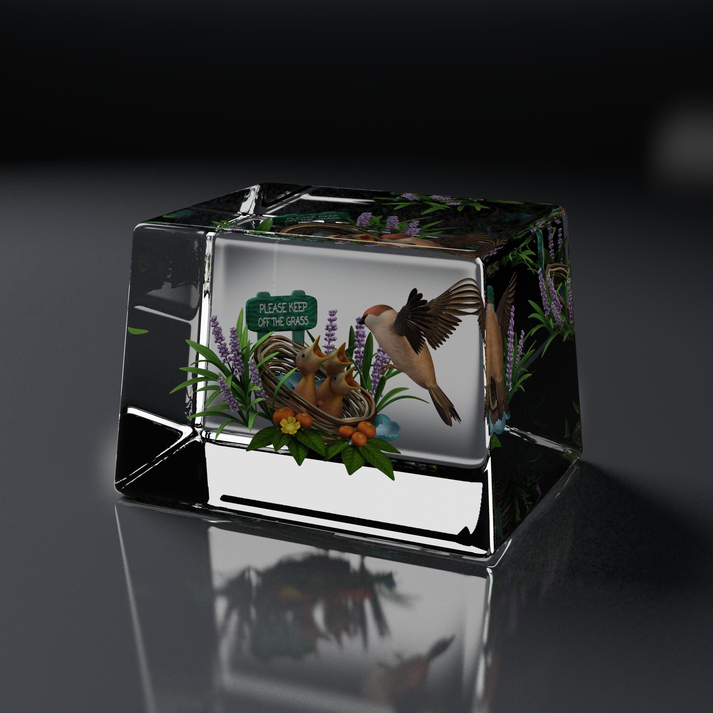
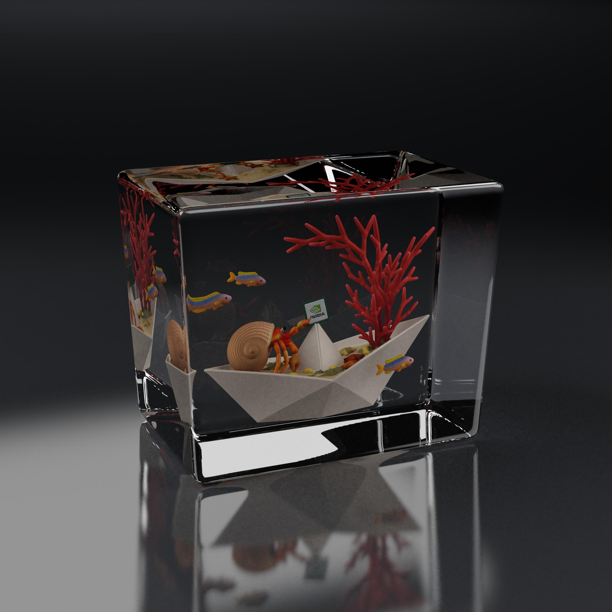
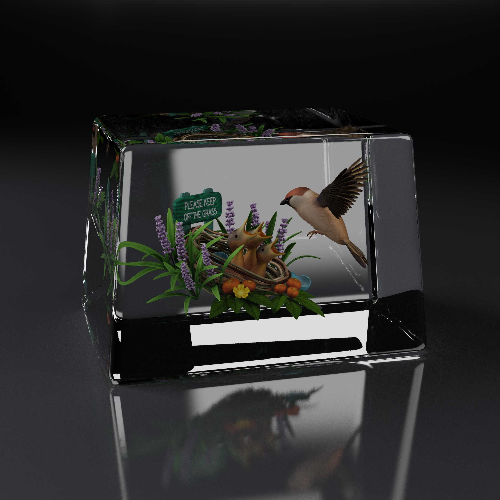
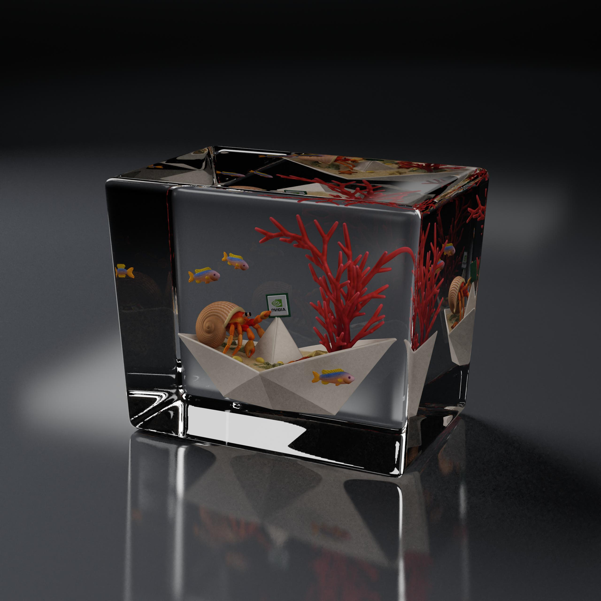
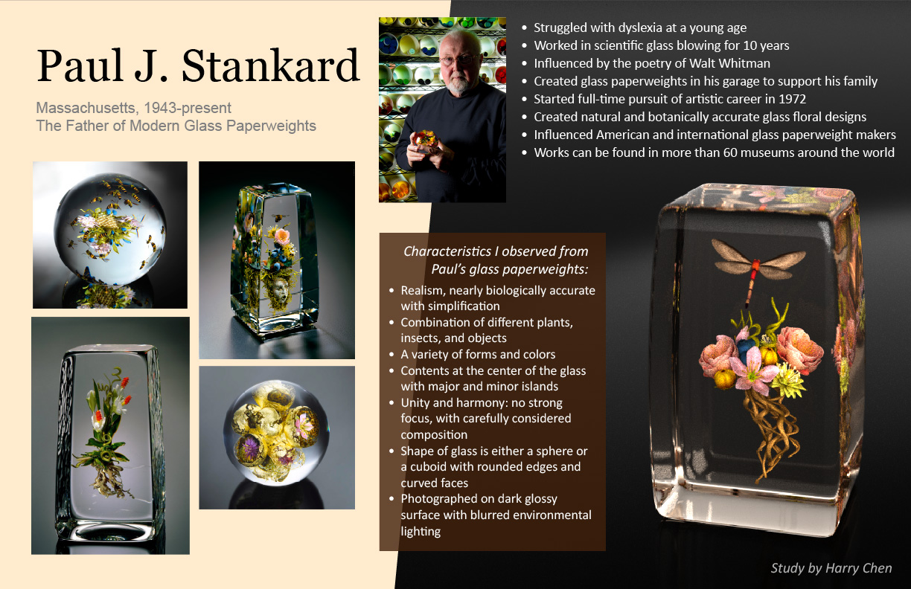
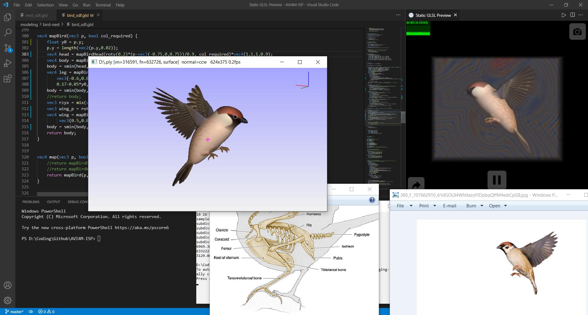
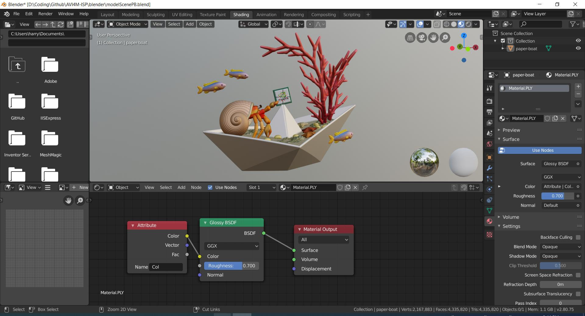

Harry Chen - Jan. 25, 2022

“Please Keep Off the Grass.” First rendering.
The appearance of animal and plant specimens viewed through transparent materials has been my fascination since childhood. With the power of computer-generated imagery, I’m able to explore the refraction, reflection, and scattering of light within a laptop. I digitally created land and sea lives inside glass trapezoids to combine several things that I’m excited about: transparent glass, the variety of animal and plant species, as well as computational technology.
The glass paperweights made by Paul J. Stankard inspired me to create accurate representations of natural lives. To demonstrate the variety of life, I compose the subject out of different types of entities: land and sea, botanical and zoological. I weave human elements into the composition: the sign on grass shows harmony and respect between humans and nature, the paper boat represents imagination and childhood memory, as well as the logo of the GPU manufacturer NVidia that reveals my enthusiasm in computer graphics, displaying the unity between the natural and digital worlds.
My goal is to create a three-dimensional object that displays realism through carefully considered composition and sophisticated lighting. The subjects inside the glass are modeled using signed distance functions by writing shader code. I experiment with the shape of glass, lighting, and camera angle in Blender. Rendered in the center of square canvases, the work turns out visually stunning. The exploratory creation process draws the magic of light and glass and strengthens my fascination with the land and sea lives stilled inside crystal-clear pieces.

“Coral Boat.” First rendering.

“Please Keep Off the Grass.” Second rendering.

“Coral Boat.” Third rendering.

Mentor artist research page with study.
Lossy-compressed 3D model of the mentor artist study.
Lossy-compressed 3D model of “Please Keep Off the Grass.”
Lossy-compressed 3D model of “Coral Boat.”

A screenshot record taken when modeling the bird.
Reference images are from the internet.

A screenshot record of shading in Blender.
A detailed record of the creative and explorative process can be found here.
Check the GitHub repository for GLSL and C++ code that generates the 3D models, .7z archive of full-resolution 3D models, Blender files used in rendering, and more.
Created by Harry Chen between Nov. 2021 and Jan. 2022.